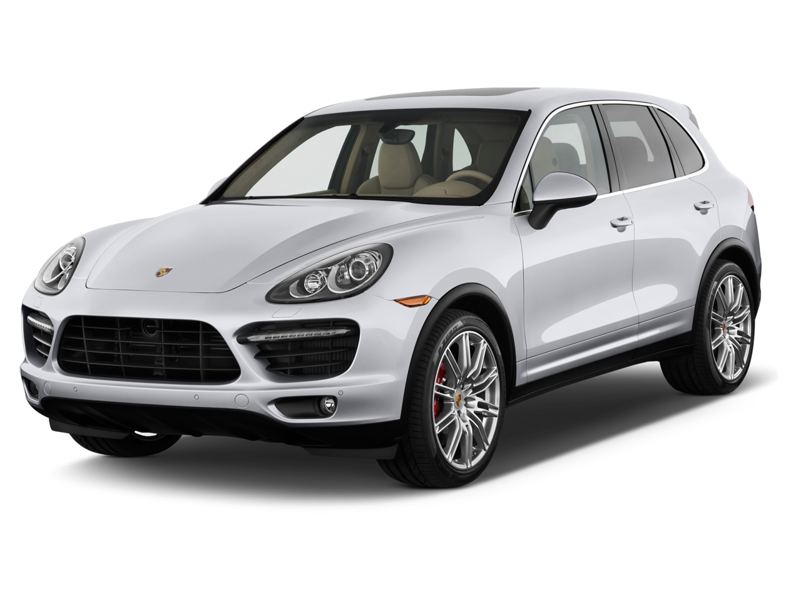
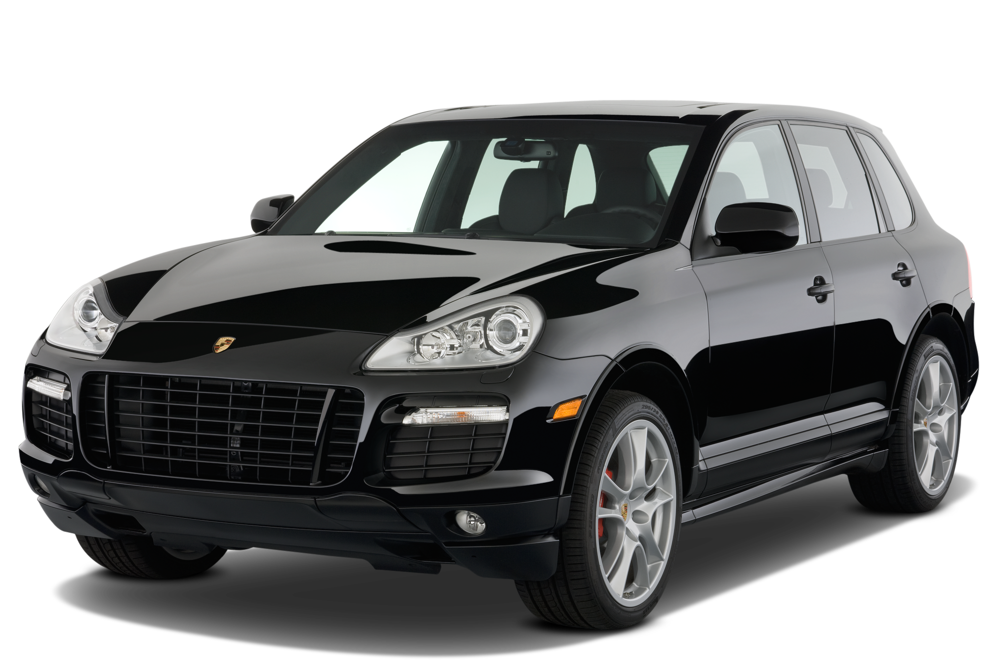

Prva generacija (E1 9PA)
Originalni Porsche Cayenne ušao je na globalno tržište na različite načine, ali se pokazao da ima odlične performanse za SUV i da je imao uporedivo dobro upravljanje kao i moćne motore. Ponuda se u početku sastojala od modela Cayenne S i Cayenne Turbo sa V8 motorom. Kasnije u ciklusu modela, VR6 i verzije sa dizel pogonom pridružile su se liniji. U osam godina modela E1 generacije, proizvedeno je ukupno 276.652 jedinica. Osnovni model Cayenne pokreće 3.2-L VR6 motor koji proizvodi 250 KS (184 kV; 247 KS). Usisna grana je jedinstvena za Porše, ali inače je motor u velikoj meri isti kao VV motor. Ubrzanje od 0–100 km/h (0–62 mph) iznosi 9,1 sekundu sa ručnim menjačem i 9,7 sekundi sa Tiptronic S.
Cayenne S
S u 9PA pokreće 4.5L V8 motor sa sistemom za podmazivanje sa mokrim karterom i promenljivim tempom ventila. Proizvodi 335 KS (250 kV; 340 KS) i 310 lb⋅ft (420 Nm) obrtnog momenta. Ubrzanje od 0–60 mph (0–97 km/h) traje 6,9 sekundi, a najveća brzina je 241 km/h. Predstavljen tek 2006. godine (kao pre-GTS koncept), Cayenne S Titanium Edition je bio jednogodišnji ekskluzivni SUV ograničene proizvodnje sa lakom čeličnom karoserijom, sa aluminijumskom haubom (lakšim od onog koji je opremljen na Cayenne S), naglašeni delovi karoserije obojeni titanijumom, bočni donji paneli karoserije, hromirane izduvne cevi Sport-Kuad Tip, aluminijumske felne od 19 inča, biksenonski farovi, dvobojne unutrašnje presvlake, Porsche PCM 2.0 sa navigacijom za putni računar, MP3 audio i Bose prostorni zvuk u kabini Ispod haube, poboljšanja su uključivala sportsko podešeno vešanje, aerodinamički paket karoserije, kutiju prenosa niskog dometa, blokadu diferencijala i 6-stepeni automatski Tiptronic menjač. Cayenne S Titanium Edition pokreće isti 4.5 L V8 motor koji je pokretao Cayenne S – i dalje proizvodi 335 ks (250 kV; 340 KS) i 310 lb⋅ft (420 Nm) obrtnog momenta. Ubrzanje je čak brže od običnog Cayennea S od 0–60 mph (0 –97 km/h) za manje od 6,2 sekunde, a najveća brzina je 150 mph (241 km/h)+.
Cayenne GTS
E1 Gran-Turismo Sport (GTS) se nudio samo u ažuriranoj šasiji 9PA između 2008. i 2010. godine. Bio je to prvi Porsche moderne ere koji je imao GTS skraćenicu u oznaci modela. Njegova sportska šasija je bila specijalno razvijena samo za ovu varijantu modela i pokretana je sa 4,8 L V8 podešenim performansama od 411 KS (302 kV; 405 KS). Takođe je imao spušteno sportsko vešanje, sportski izduvni sistem i točkove visokih performansi od 21 inča (533 mm) kao standard. Bio je mnogo lakši od normalnog Cayenne-a i imao je standardni aerodinamični široki komplet karoserije iz fabrike. Porsche Cayenne GTS je imao vreme od 0-100 km/h (62 mph) za 6,1 sekundu sa maksimalnom brzinom od 253 km/h. Šestostepeni manuelni menjač je takođe bio ponuđen u GTS-u na ograničeno vreme.
Cayenne Turbo and Turbo S
Prva generacija 9PA Cayenne Turbo imala je 450 KS (331 kV) i može da ubrza od 0-100 km/h (62 mph) za 5,6 sekundi. Turbo S verzija je napravljena 2006. kako bi se takmičila sa Mercedes-Benz ML 63 AMG. Cayenne Turbo i Turbo S uključuju kućište niskog dometa, blokadu diferencijala i podesivo po visini, terensko vešanje. Turbo S pokreće 4,5 L V8 sa dva turbo punjača koji proizvodi 521 KS (383 kV; 514 KS) i 720 Nm (530 lb⋅ft) obrtnog momenta; Ubrzanje od 0–60 mph (97 km/h) traje 5,0 sekundi, a najveća brzina je 167 mph (269 km/h); Poseduje šestostepeni automatski Tiptronic menjač. Godine 2008. na Salonu automobila u Pekingu predstavljen je ažurirani 9PA Turbo model, sa većim motorom od 4,8 L. On proizvodi 500 KS (368 kV; 493 ks) više snage i može da ubrza od 0-60 mph (97 km/h) za 4,9 sekundi. Takođe otkriven sa novim Turbo, bio je novi Turbo S od 550 ks (410 kV) model. Ubrzanje od 0–60 mph (97 km/h) za taj automobil traje 4,7 sekundi i može se postići sa opcionim keramičkim kompozitnim kočnicama.
.png)
Druga generacija (E2 92A)
Druga generacija Porsche Cayenne 92A je počela da se prodaje u periodu od aprila do maja 2010. kao model iz 2011. godine, sa zvaničnim debijem na Salonu automobila u Ženevi 2010. U pripremi za otkrivanje, proizvodni pogon Cayenne u Lajpcigu, u Nemačkoj, zatvoren je u decembru 2009. godine da bi se počelo sa preuređivanjem fabrike za novi model, što je proces koji je trajao dva do tri meseca. 92A Porsche Cayenne je bio nešto veći od svojih prethodnika, ali je imao više zakošeno zadnje staklo, manje uspravno šoferšajbnu, više nagnutu liniju krova, retrovizore na vratima, manje prozore na zadnjem delu vozila, farove inspirisane Carrerom GT, zadnja svetla koji se protežu na vrata prtljažnika, LED dnevna svetla i značajno redizajniran enterijer sličan Panameri. Cayenne iz 2011. je skoro 250 kg (551 lb) lakši od prethodnih modela zbog uklanjanja kutije prenosa niskog dometa, što ga čini malo štedljivijim u odnosu na prethodnu liniju. Više upotrebe aluminijuma i magnezijuma takođe je pomoglo u brijanju težine. Uprkos nižem položaju, terenske sposobnosti novog vozila su zadržane bez ugrožavanja rasporeda i dizajna orijentisanog na ulične performanse. Dizelski Porsche Cayennes 2013–2016. godine uključen je u skandal oko emisije izduvnih gasova Folksvagena. Standardne karakteristike 92A Porsche Cayenne-a su uključivale automatsku klimatizaciju sa dvozonskim kontrolama klime, unutrašnji filter za vazduh, nagibni/teleskopski upravljač presvučen kožom sa radio kontrolama, tempomat, kožne presvlake, osmosmerna električna prednja sedišta, spoljnu temperaturu indikator, i univerzalni otvarač garažnih vrata u osnovnom modelu. Cayenne S dodaje električni šiber i memoriju za vozačevo sedište. Cayenne GTS je dodao opcionu kameru za zadnji pogled, pristup i pokretanje bez ključa i sistem memorije. Konačno, najprestižniji Cayenne Turbo i Turbo S dodali su navigacioni sistem sa prepoznavanjem glasa, opcione četvorozonske kontrole klime, grejanje zadnjih sedišta, vrhunski zvučni sistem sa CD menjačem sa šest diskova.
Hibrid
Na sajmu IAA 2005, Porsche je najavio da će proizvoditi hibridnu verziju Cayennea pre 2010. (Porsche Cayenne Hibrid). Dve godine kasnije, na IAA 2007, Porsche je predstavio funkcionalni Cayenne Hibrid i demonstracioni model pogona. Značajne modifikacije ovog automobila uključuju električnu vakuum pumpu i hidrauličnu pumpu za upravljanje, omogućavajući automobilu da funkcioniše čak i kada je motor deaktiviran. Nikl metal hidridna baterija od 288 volti postavljena je ispod poda prtljažnika, zauzimajući prostor koji se inače koristi za rezervnu gumu. Proizvodna verzija, nazvana 'S' Hibrid, lansirana je 2010. godine, sa 3.0-L benzinskim V6 povezanim sa električnim motorom za postizanje emisije CO2 od 193 g/km. S Hibrid je lansiran na američko tržište u novembru 2010.
Plug-in Hibrid
U julu 2014. Porsche je najavio lansiranje Porsche Cayenne S E-Hibrid, plug-in hibrida sa potpuno električnim dometom između 18 i 36 km (11 i 22 mi) prema novom evropskom standardu vožnje (NEDC). Plug-in model je istisnuo Cayenne S Hibrid iz linije, i deo je revidirane ponude. Cayenne S E-Hibrid je prvi plug-in hibrid u premium SUV segmentu, omogućavajući Porscheu da postane prvi proizvođač automobila sa tri proizvodna plug-in hibridna modela. Isporuke u Nemačkoj trebalo je da počnu u oktobru 2014. Prodaja u SAD počela je u novembru 2014.
Guinness-ov svetski rekord
1. maja 2017. Porsche Cayenne S Diesel iz 2017. postavio je Ginisov svetski rekord za najtežu letelicu koju vuče serijski automobil. Cayenne je vukao Air France Airbus A380 od 265 tona na razdaljinu od 42 metra, oborio je prethodni rekord Nisan patrola iz 2013. koji je vukao Iljušin Il-76 od 170 tona na udaljenosti od 50 metara. Nakon pokušaja, Porsche je ponovio test koristeći benzinski Cayenne Turbo S sa 800 Nm obrtnog momenta, 50 Nm manje od S dizela, u pokušaju da dokaže izuzetnu sposobnost Cayenne-a.
Treca generacija (E3)
Porsche Cayenne treće generacije predstavljen je 29. avgusta 2017. kao model za 2019. godinu. Zasnovan je na platformi Volksvagen Group MLB koja se deli sa nekoliko drugih luksuznih crossover SUV-ova koje proizvodi Volksvagen grupa, kao što su Volksvagen Touareg, Audi K7, Audi K8, Bentlei Bentaiga i Lamborghini Urus. Za ovu generaciju, Cayenne više ne deli dizajn panela vrata sa Volksvagen Touaregom. Prema Stephanu Lenschovu, menadžeru proizvoda za karoseriju Cayenne-a, ovo omogućava Porsche-u da Cayenneu da više dizajna „boce koka-kole“. Cayenne je takođe dobio redizajniran prednji kraj sa većim otvorima za vazduh, istaknutijim naborima duž haube i nižom linijom krova kako bi se njegov stil uskladio sa 911. Međuosovinsko rastojanje je ostalo nepromenjeno u odnosu na prethodnu generaciju, ali je Porše malo povećao ukupnu dužinu Cayenne-a za oko 63 mm (2,5 inča). Visina je blago smanjena za 9 mm (0,4 in), a koeficijent otpora je ocenjen na 0,35. Uprkos malom povećanju dužine, Cayenne treće generacije je lakši za oko 65 kg (143 lb), u zavisnosti od konfiguracije, uz upotrebu lakše šasije. Aluminijum se u velikoj meri koristi u vozilu, uključujući njegovo telo u beloj boji, kao što su vrata, krov, hauba i zadnji poklopac. Odnos aluminijuma i čelika visoke čvrstoće je otprilike 50-50, prema Lenshovu. Lakša litijum-jonska polimerna baterija za startovanje koja štedi 10 kg (22 lb) takođe doprinosi njenoj raspodeli težine, koja je u osnovnoj konfiguraciji skoro izbalansirana sa približno 55 procenata napred i 45 procenata pozadi. Sve opcije motora treće generacije Cayenne-a su sa turbo punjenjem, dok se dizel motor više ne nudi. Svi Cayenne modeli ove generacije opremljeni su osmobrzinskim „Tiptronic S“ menjačem za koji se tvrdi da obezbeđuje brže vreme odziva u nižim brzinama. Porsche nudi opcione Porsche kočnice sa površinskim slojem (PSCB), koje se sastoje od diska od livenog gvožđa sa 70 mikrometara prevlake od volfram-karbida. Prema Karlu Heessu, Porsche direktoru za liniju proizvoda SUV, PSCB smanjuje prašinu od kočnica za čak 50 procenata u odnosu na konvencionalne gvozdene kočione diskove i produžava vek trajanja diska do 35 procenata. Skuplji je od gvozdenih diskova, dok je i dalje jeftiniji za 50 procenata od opcije keramičke kočnice. Ostale inovacije u ovoj generaciji uključuju raspoređene (različite širine) prednje i zadnje gume i opciono upravljanje zadnjom osovinom za smanjenje radijusa okretanja
Cayenne Coupé
Model sa raskošnijim krovom pod nazivom Cayenne Coupé postao je dostupan 2019. godine. Otkriven je tokom sajma automobila u Šangaju 2019. u aprilu 2019. Na predstavljanju su bila dva modela, Cayenne Coupe i Cayenne Turbo Coupe. Cayenne Coupe je u velikoj meri prerađen od standardnog modela, tako što ima pliće prednje vetrobransko staklo i uži A-stub. Krov je spušten za 20 mm (0,8 in), dok su novi paneli zadnjih vrata i ažurirani blatobrani proširili širinu vozila za 18 mm (0,7 in). Koeficijent otpora je ocenjen na 0,34, što je 0,1 niže od standardnog modela. Svaki Cayenne Coupe opremljen je standardnim panoramskim krovom od 2,16 m2 (23,3 sk ft) od fiksnog stakla, dok je opcioni karbonski krov dostupan kao opcija.
Cayenne Turbo
U septembru 2017. Porše je u ponudu dodao Cayenne Turbo. Predstavljen na sajmu automobila u Frankfurtu, Cayenne Turbo pokreće 4,0-litarski V8 sa dvostrukim turbo punjenjem od 550 KS (405 kV; 542 KS) i 770 Nm (78,5 kg⋅m; 568 lb⋅ft) od . Porsche je zahtevao ubrzanje od 0–100 km/h (0–62 mph) za 3,9 sekundi, ili 3,7 sekundi sa Sport Chrono paketom, i maksimalnu brzinu od 285 km/h (177 mph). Porsche Surface Coated Brakes (PSCB) je standardna oprema.
Cayenne E-Hibrid & Turbo S E-Hibrid
U maju 2018. Porsche je predstavio Cayenne E-Hibrid. Deleći isti plug-in hibridni sistem sa Panamerom 4 E-Hibrid, varijanta koristi 3,0-litarski V6 benzinski motor sa osmostepenim Tiptronic S automatskim menjačem od 462 KS (340 kV; 456 KS) i 700 N⋅ m (71,4 kg⋅m; 516 lb⋅ft) obrtnog momenta. Porsche tvrdi da ubrzava 0–100 km/h (0–62 mph) za 5,0 sekundi i maksimalnu brzinu od 252 km/h (157 mph). Potpuno električni domet je Porsche ocenio na 43 km (27 milja). Potrebno je 7,8 sati da se baterija od 14,1 kVh u potpunosti napuni sa priključkom od 230 volti, ili 2,3 sata ako je ugrađen opcioni punjač od 7,2 kV. U avgustu 2019, Cayenne Turbo S E-Hibrid je pušten u prodaju i za obične i za kupe karoserije. Plug-in hibridni model, koristi 4,0-litarski V8 benzinski motor sa dvostrukim turbo punjenjem od 550 KS (405 kV; 542 KS) i električni motor od 136 KS (100 kV; 134 KS) za kombinovano ukupno 680 KS (500 kV; 671 ks) i 900 N⋅m (664 lb⋅ft) obrtnog momenta. Koristi se litijum-jonska baterija od 14,1 kVh, za koju je rečeno da nudi 30 posto više kapaciteta od baterije koja se koristila u plug-in hibridnim modelima Cayenne prethodne generacije. Vreme punjenja je navedeno na 2,4 sata kada je priključen na 240-voltni izvor od 50 ampera. Porše je zahtevao ubrzanje od 0–100 km/h (0–62 mph) za 3,8 sekundi sa maksimalnom brzinom od 295 km/h (183 mph). Porsche keramičke kompozitne kočnice (PCCB), Porsche Dinamic Chassis Control (PDCC), Porsche Torkue Vectoring Plus (PTV+) i Sport Chrono paket su standardna oprema za model.
.png)
Cayenne GTS & Turbo GT
U junu 2020., Porsche je predstavio Cayenne GTS i Cayenne GTS Coupe za modelsku godinu 2021, nakon dvogodišnje pauze. Pokreće ga 4,0-litarski V8 sa dvostrukim turbo punjenjem koji deli sa Panamerom GTS, koji je ocenjen na 460 KS (338 kV; 454 KS) i 620 Nm (63,2 kg⋅m; 457 lb⋅ft) obrtnog momenta. Novi modeli su u stanju da dostignu 100 km/h (62 mph) za 4,5 sekunde ili 4,2 sekunde koristeći Performance Start, koji je uključen u opcioni Sport Chrono paket (standardno za Coupe). Sport Design paket, 21-inčni RS Spider Design točkovi i Sport izduvni sistem uključeni su kao standardna oprema. U junu 2021. Porsche je predstavio Cayenne Turbo GT verziju. Zasnovan na Cayenne Coupe-u, koristi 4,0-litarski tvin-turbo V8 motor za koji Porsche tvrdi da proizvodi 640 KS (471 kV; 631 ks) i tvrdi da ubrzava 0–100 km/h (0–62 mph) za 3,3 sekunde . Opremljen je točkovima od 22 inča sa gumama Pirelli P Zero Corsa. Visina vožnje je smanjena za 18 mm (0,7 in), dok je ukupna visina vozila niža za 30 mm (1,2 in)
.png)